① 우리 가게 이야기

전남 목포에서 얼큰국밥을 배민으로 팔고 있어요.
참여 전 · 업무는 집에 가야만, 집에서 하던 일을 이어서 할 수 있었어요.
가게 로고 · 사장님 말씀
손님 리뷰 한 줄이,
인스타 캐러셀과 릴스 영상이 됩니다
마선생얼큰국밥 · 유승균
로그인 없이 눌러 보기 (가상 데이터) · review-content-studio-demo.vercel.app
전남 목포에서 얼큰국밥을 배민으로 팔고 있어요.
가게 로고 · 사장님 말씀
각각 로그인해서 하나씩 열어 읽어요
“국물이 진해서 해장에 딱이었어요” 같은 말은 어떤 광고 문구보다 믿음이 가는데…
글 쓰고, 카드 디자인하고, 영상 편집할 시간이 없어서 그냥 흘려보냈어요
예전 방식을 그림으로 다시 그린 것 · 가상 화면
사장님이 한 말 그대로 · 코드는 직접 쓰지 않았어요
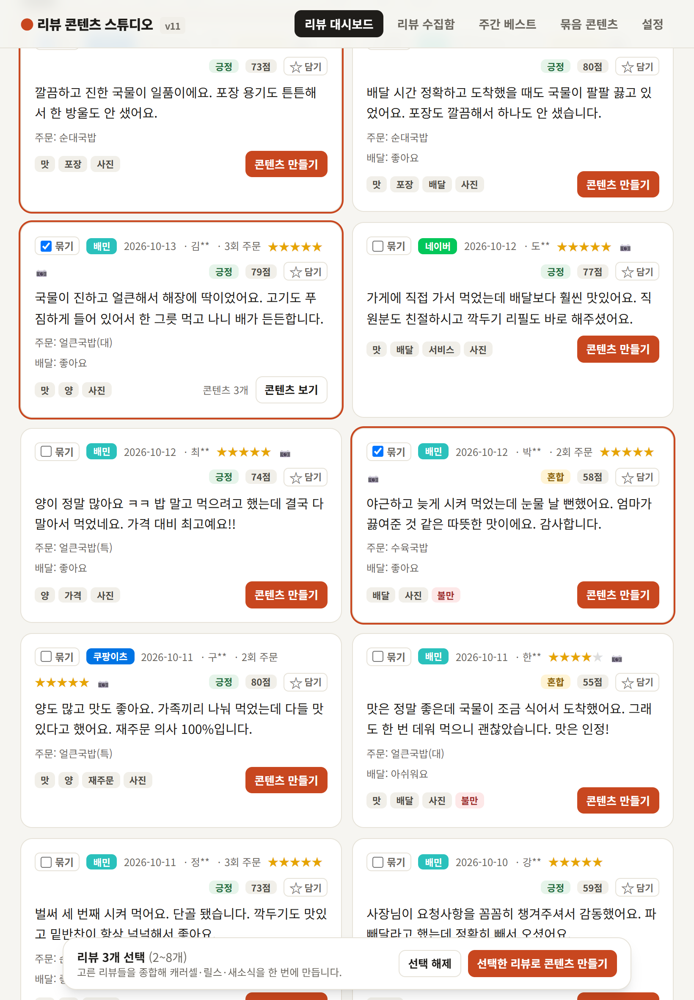
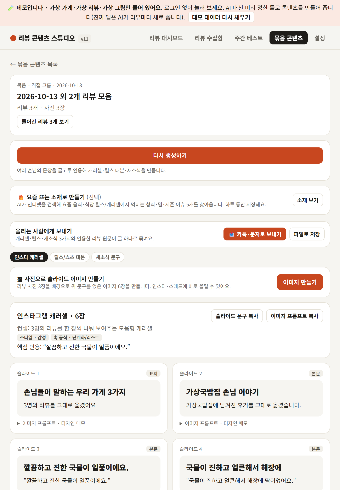
여러 손님의 말을 골고루 인용한 캐러셀 · 릴스 대본 · 새소식
데모 화면 · 가상 데이터 · 데모는 AI 대신 미리 정한 틀, 진짜 앱은 Claude가 새로 씀
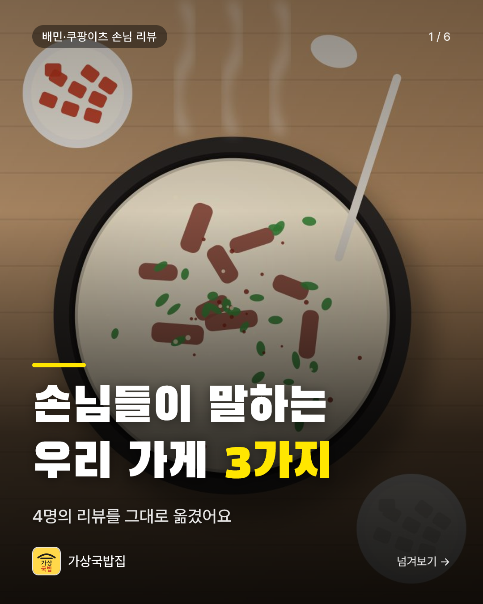
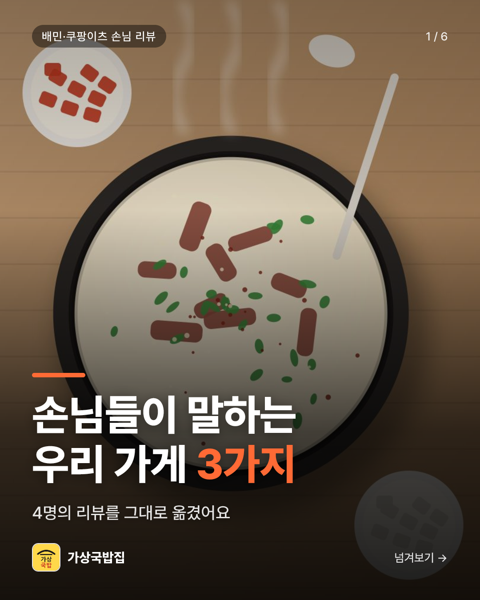
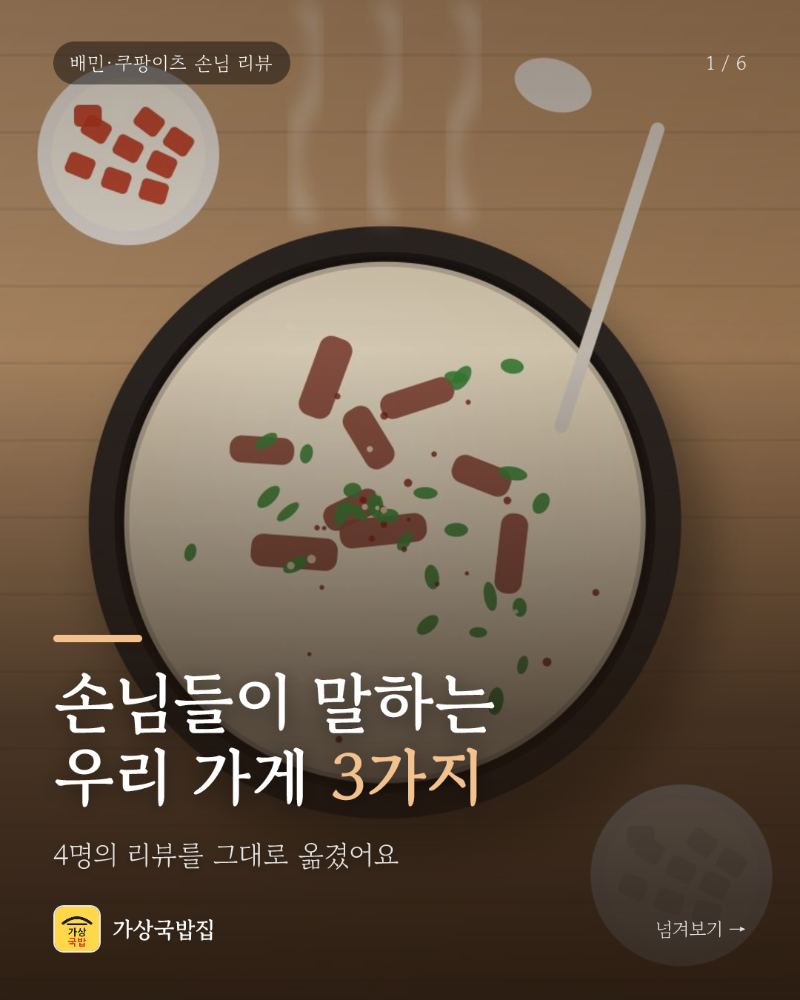
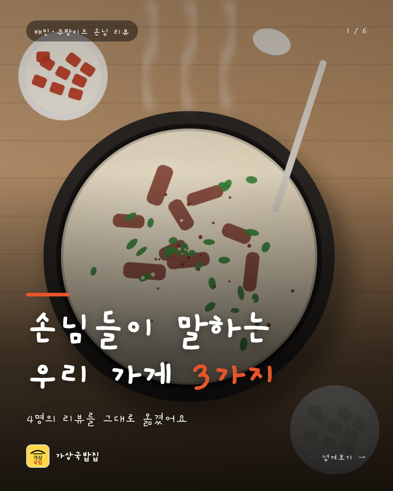
같은 리뷰, 글꼴·색·분위기만 바뀌어요 · 인스타 4:5 / 스레드 1:1
데모 화면 · 가상 그림·가상 로고 · 진짜 앱은 손님이 올린 사진을 배경으로 써요
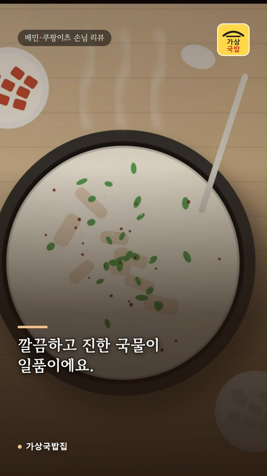
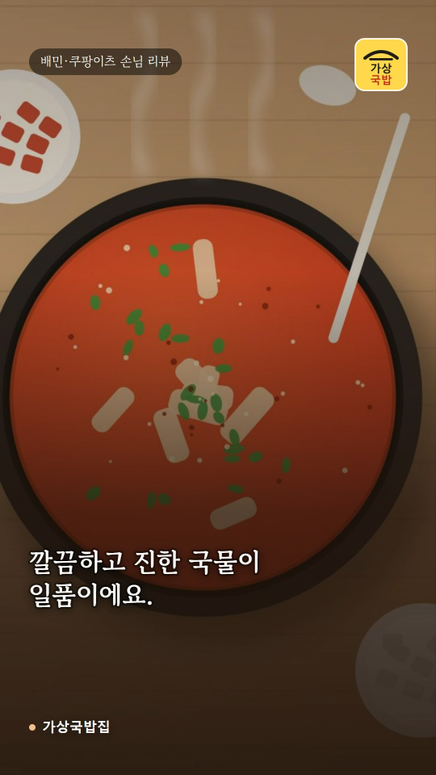
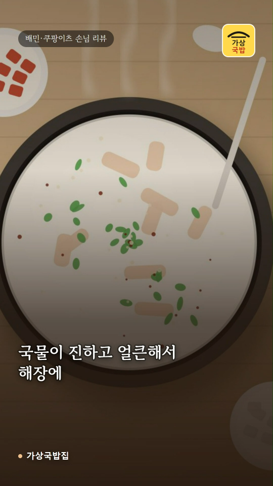
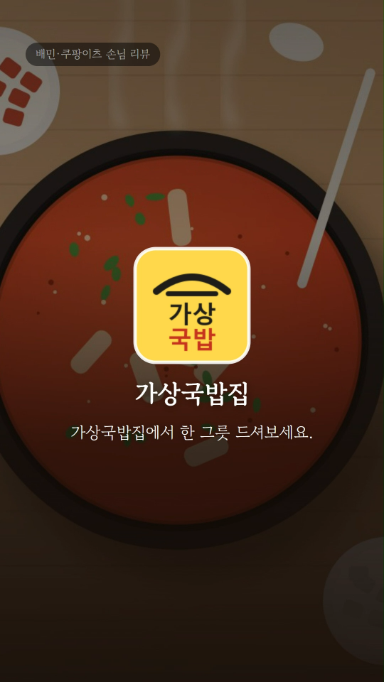
30초 세로 영상(MP4) · 만드는 데 PC에서 약 10~20초
데모 화면 · 가상 그림 · 음악은 인스타·유튜브 앱에서 올릴 때 고르면 돼요
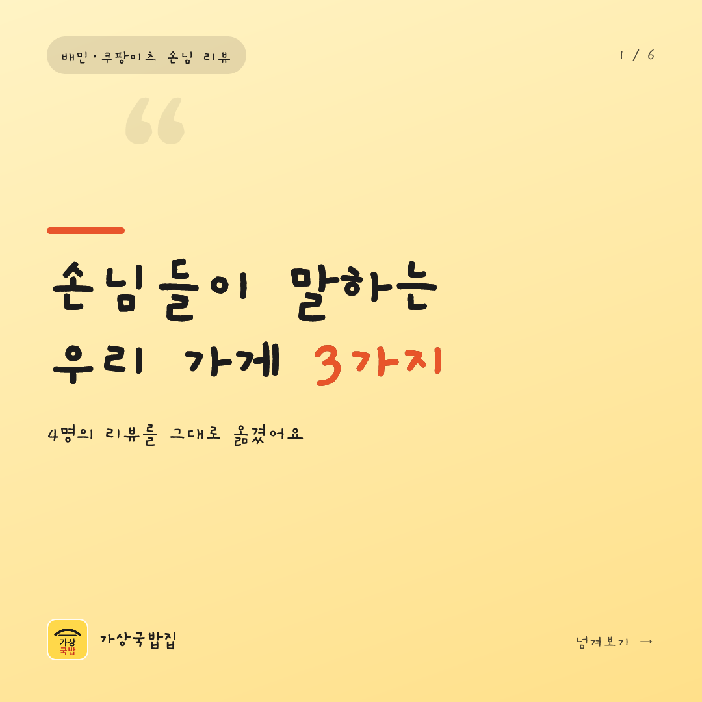
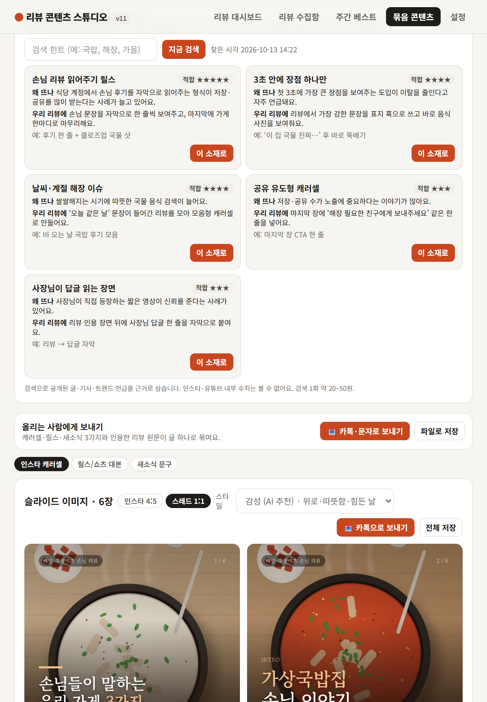
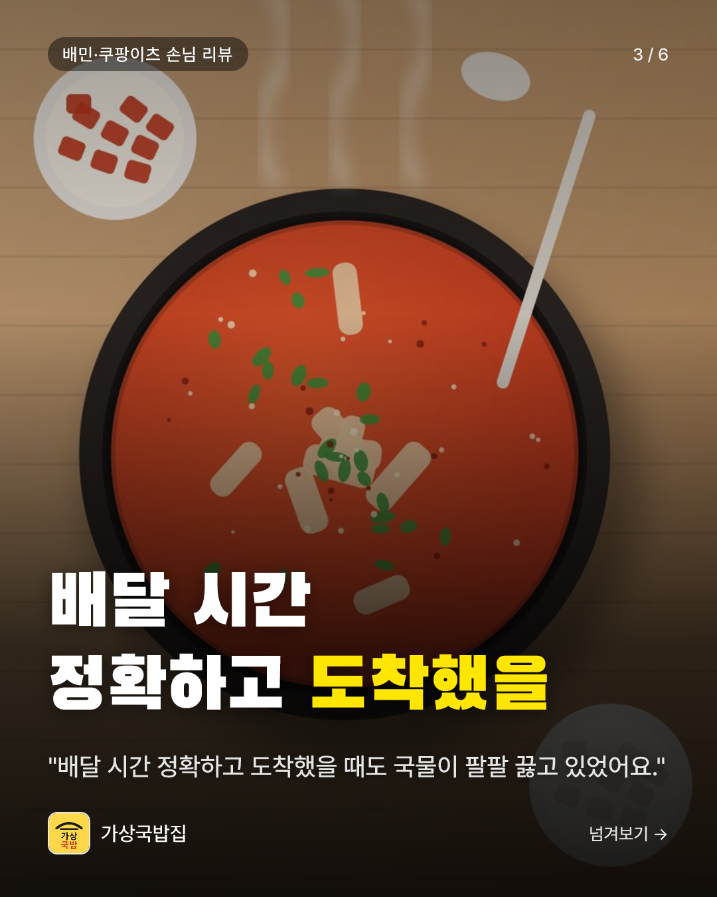
+ 카톡으로 보내기 · 파일로 저장 · 3종을 글 하나로 묶어 전달
데모 화면 · 가상 데이터 — 우리 가게 실제 결과물은 손님 사진 때문에 공개하지 않았어요
가상 고객 5명 QA: 쓰겠다 2 · 조건부 2 · 안 쓰겠다 1 → 말한 것을 v4~v6에서 고쳤어요
직원·손님 반응: 아직 기록이 없어요 · 가상 고객 의견은 실제 고객 검증을 대신하지 않아요
| 가상 고객이 말한 것 | 그래서 고친 것 |
|---|---|
| “폰에서 눌렀을 때 되는지 안 되는지 그 자리에서 알려주면.” — 장승옥(51) (실제로 쿠팡 수집을 3번 눌러 3번 다 ‘시작 전 취소’였어요) | 노트북 앱이 꺼져 있으면 버튼을 잠그고 켜는 법 안내 (v4) |
| “올리는 것까지 해주거나, 딸한테 보내기 버튼이 있으면.” — 고영자(60) | 카톡·문자로 보내기 + 파일로 저장 (v6) |
| 공용 폰에서 로그인이 30일 유지되는 점 — 이지우(37)가 짚음 | 로그아웃 버튼 + ‘같이 쓰는 폰’ 체크 (v6) |
가상 고객 이름·말은 합성 인물의 의견이에요
줄어든 시간에 해 보려는 일
매장 매뉴얼 개선 · 동선 재배치 · 식재료 관리 · 메뉴 구성 · 옵션 변경
앞으로 할 것 (아직 안 됨)
앞으로 할 것은 아직 만들지 않은 것입니다